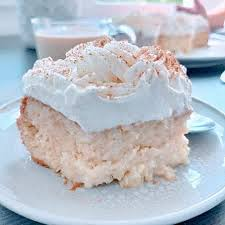

Torta Tres Leches

El Tres Leches es un postre tradicional latinoamericano que consiste en un bizcocho esponjoso bañado en tres tipos de leche: leche evaporada, leche condensada y crema de leche. El resultado es un pastel increíblemente húmedo, dulce y cubierto con un delicioso merengue.